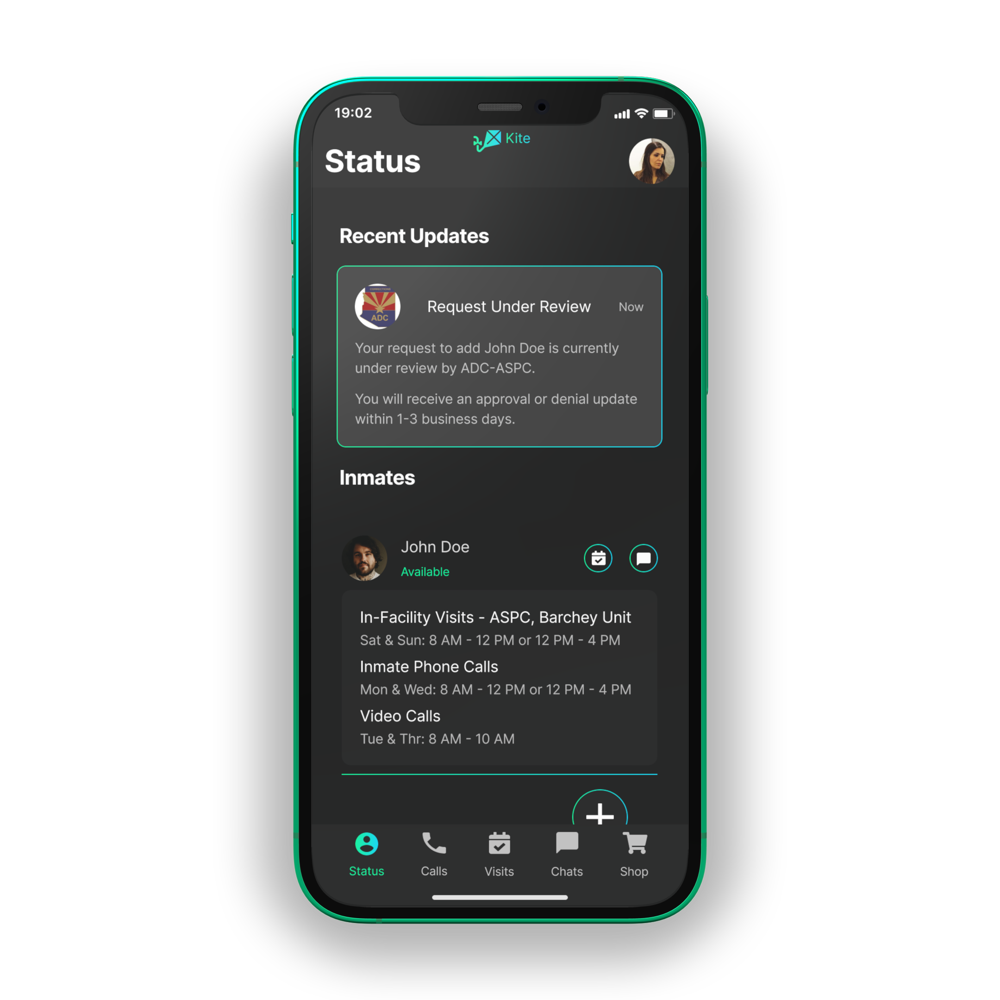
Overview
A new and improved take.
Problem
Providers of telecommunications service to prisons have secured contracts worth $1.6b but have not yet developed seamless design solutions that enhance the communication experience for incarcerated individuals and their loved ones.
Solution
My aim was to design a solution that would improve upon the user experience of inmate communication apps by modernizing the design and collaborating with friends and family of the incarcerated to ultimately deliver a solution with true user value.
Target Audience
The incarcerated community and those impacted by incarceration.
Deliveries
Research Plan, Competitive Analysis, User Survey, User Interviews, Personas, User Journey, User Stories, User Flow, Sitemap, Wireframes, Branding, Usability Testing, High-Fidelity Prototype
Learnings & Takeaways
Focus on key features that users need
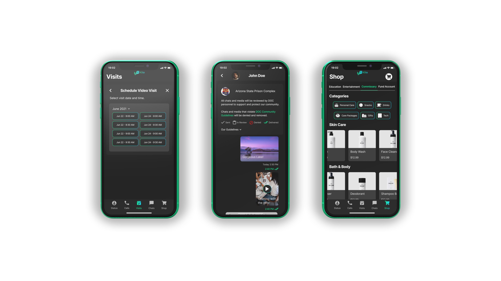Deliverables
- Research Plan
- Competitive Analysis
- User Survey
- User Interviews
- Personas
- User Journey
Research Plan
Prior to diving into research, I formulated a research plan to identify my research goals and methods. My goals were focused primarily on understanding users and identifying design opportunities and areas of improvement. Through research, I wanted to identify user needs and mobile application expectations, understand user traits, demographics, characteristics and underlying motivations, and identify prison telecommunications service pain-points and opportunities for improvement.
Competitive Analysis
I conducted my competitive analysis of popular prison communications apps by utilizing the SWOT method to focus primarily on Securus Technologies (which currently has 18K reviews on the app store and services over 3,400 correctional facilities across the U.S.) and Pigeonly, a popular web application created by a former inmate which primarily provides print and mail services for prison communications.
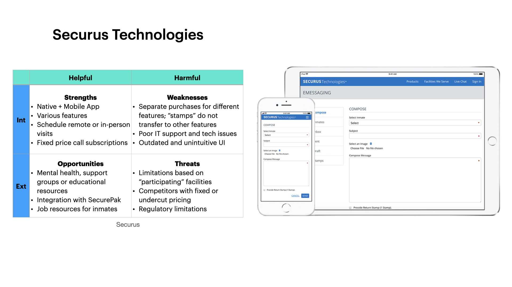 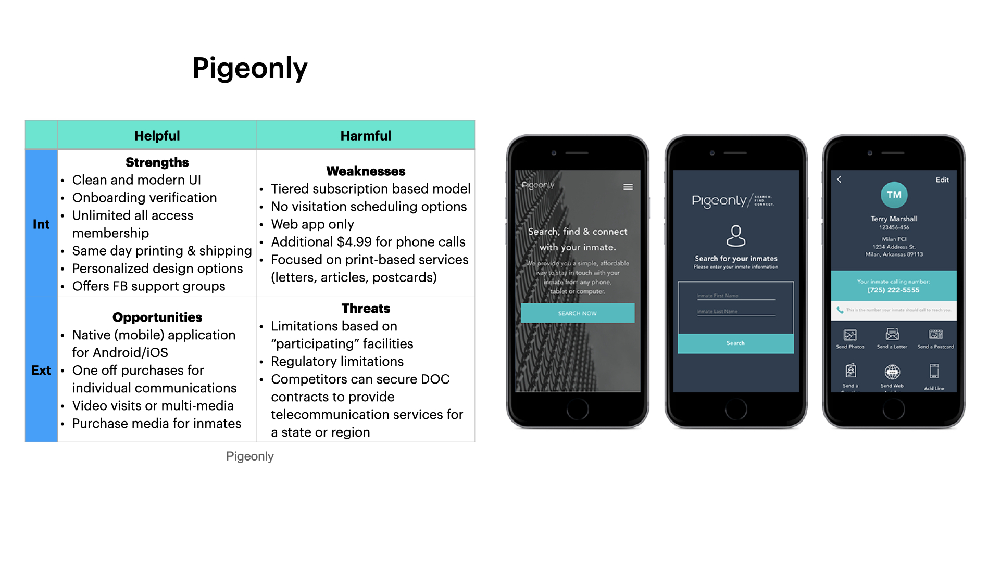User Survey
After completing my competitive analysis, I created a survey to gather additional quantitative insights, particularly insights from those who have an incarcerated friend or family member. My survey findings would then help me back up any design decisions later on in the process.
I had a total of 96 survey respondents and 66.7% of these respondents have or had an incarcerated friend or family member. 75% of those 64 respondents said they communicate with their incarcerated loved one, every day and 40% of them use inmate communication mobile apps.
The preferred methods of communication with incarcerated friends and family are mobile apps (40%), phone calls (21.9), in-person visits (21.9%) and video visits (9.4%).
The most important aspect when staying in touch with the incarcerated friend or family member is hearing their voice, exchanging messages and pictures, and having a convenient, flexible and affordable method to stay in touch. The most frustrating aspect of staying in touch is the fact that its expensive and it's limited.
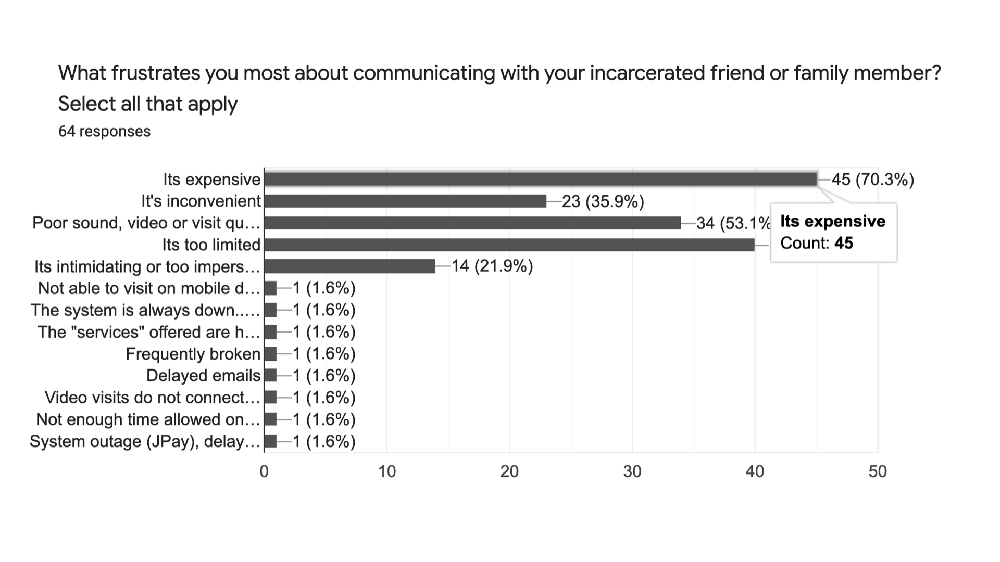 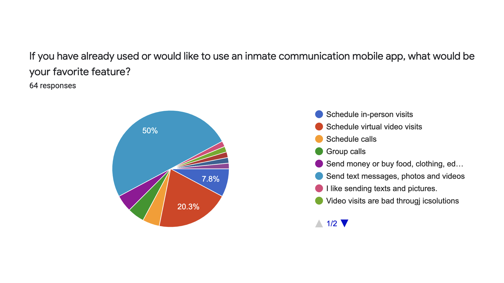 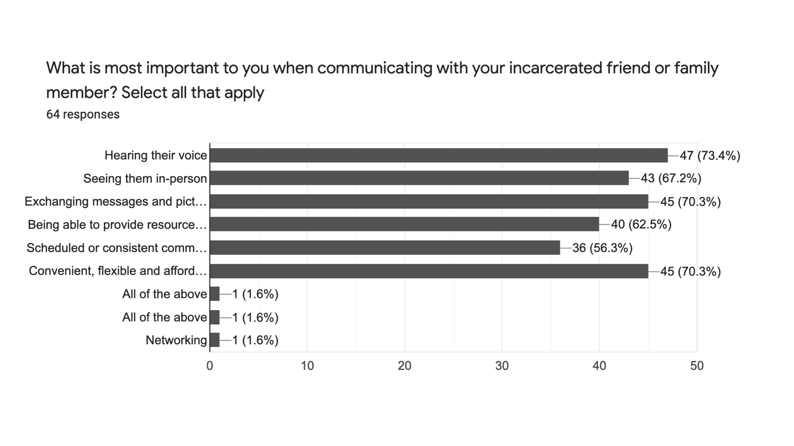User Interviews
Once my survey closed, I then had the opportunity to gather qualitative insights by conducting user interviews with 4 survey respondents who not only had experience with the impact of incarceration but who also use communication apps to stay in touch with incarcerated loved ones.
These interviews helped me deepen my understanding so I could really think through the needs of users in the unfortunate situation that results in the need to use utility apps like these.
I asked those I interviewed to tell me about what they enjoy and dislike about the process of communicating with an inmate, how their experience could be improved, and what app features they appreciate or would suggest to improve the app experience.
The primary takeaways of my interviews are that users expect convenience when engaging with service (especially tech) so the more convenient your experience is, by having that connected experience without leaving your home, the better. This also ties in with the need of connection. We use technology as a convenient way to connect with others so if an experience promotes that feeling of “I’m involved without exactly being present” that’s an ideal experience for users, especially in this context.
Second users are looking for reliability, it’s annoying when there are frequent service disruptions so when your using a service and especially when you’re paying for it, you expect that it works and when it doesn’t you want immediate support.
Finally, users want affordability. While I don’t think this was the expectation because survey respondents are used to having to pay money but they all shared the common frustration of this overall experience being incredibly expensive and hoped for cheaper alternatives.
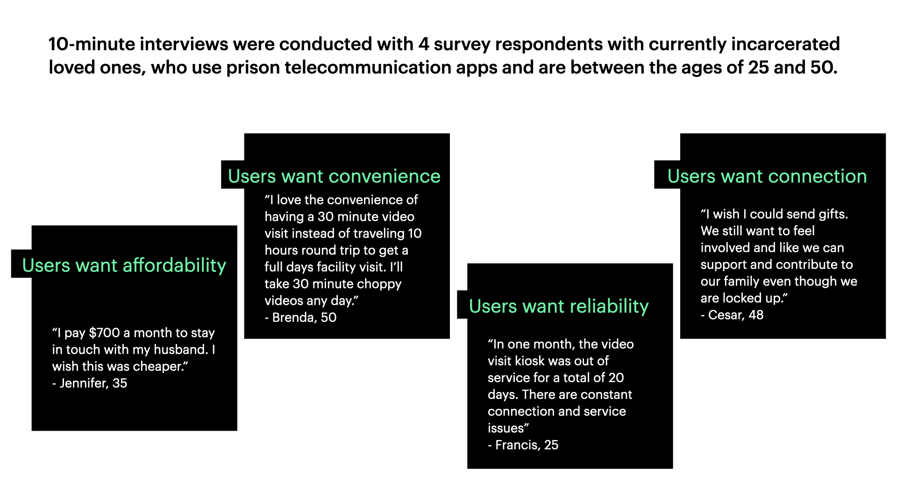Personas
The demographics from my survey results were predominately white or hispanic females between the ages of 25 to 44 with some college experience. According to the Federal Bureau of Prisons the demographics of inmates are predominately white between the ages of 31 and 41.
My personas were created to reflect the story of a family that is impacted by incarcerated by creating personas that represent the demographics of my survey and the demographic data published by the Federal Bureau of Prisons.
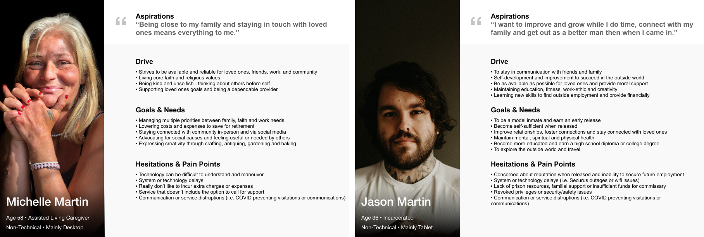 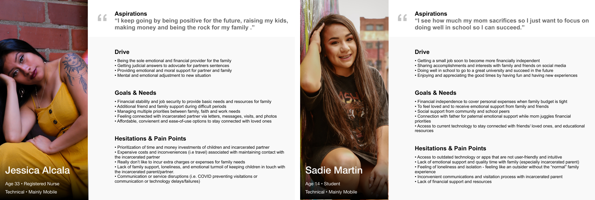User Journey
With the target audience clear, I went on to create a user journey (specific to the inmate communication app experience) for Michelle Martin who is looking to manage communications with her incarcerated son.
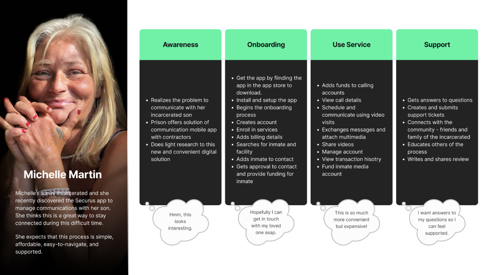Deliverables
- User Stories
- Sketches
- User Flow
- Sitemap
- Wireframes
User Stories
Prior to diving in to ideation via sketching, I needed to clarify user needs by identifying key needs from my user research findings. I did this by crafting user stories using the Jobs-To-Be-Done framework.
As a [type of user], I want [this goal] so that [this reason]
The user stories that I identified as being the high priority items based on the expectations that users expressed during the Discover phase. Which centered on being able to send and receive messages, accept calls, provide resources and financial support, schedule visits, view alerts and manage the user account.
- Send and receive mobile text messages, photos, voice memos and videos instantly so that I can feel immediately connected to my incarcerated loved one without communication delays.
- Receive instant communication delivery feedback so that I can have peace of mind.
- Schedule virtual video visits that are reliable and high quality so I can get the in-person visitation experience without the inconvenience of travel and expenses.
- Accept calls so that I can feel more connected with my incarcerated loved one.
- Schedule in-person visits so I can visit my incarcerated loved and connect in-person.
- To provide financial support, gifts and resources for my loved one so I can feel supportive.
- To access my account settings so that I can connect to other devices easily and manage funds, so that I can feel in control and personalize my app experience.
Sketches
Once I had a grasp on product needs and features, I began the preliminary sketches that would eventually become a wireframe. Sketching helped me ideate and think through how the app might look and how it would function.
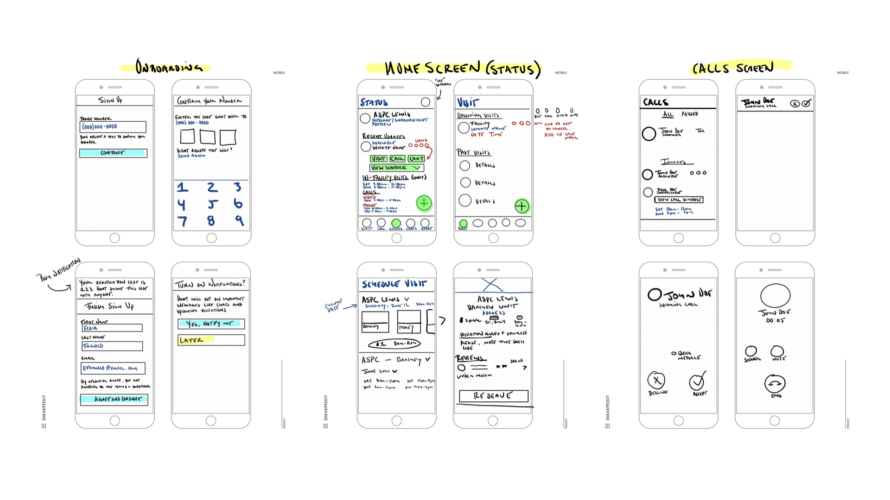User Flow
After sketching, I moved on to creating a user flow to document features and functionality. At this point, I envisioned an application with 6 primary screens and flows (onboarding, status/home, calls, visits, chats and a shopping component).
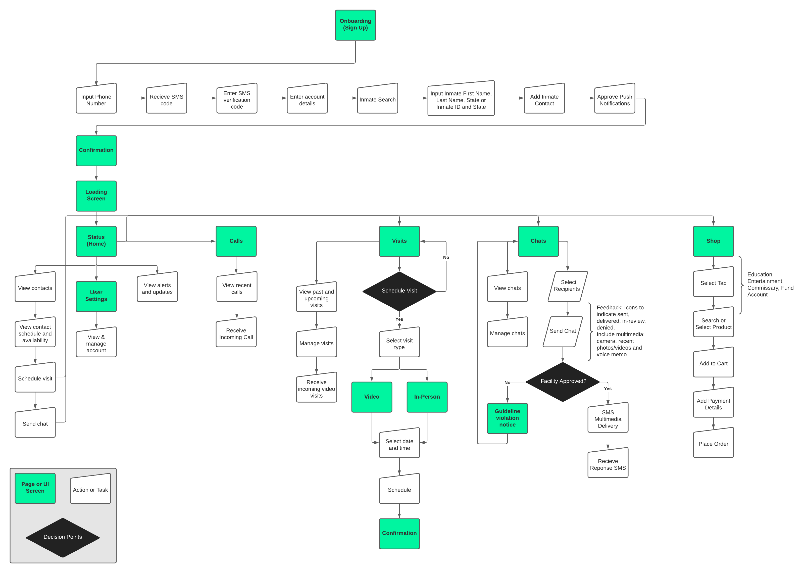Sitemap
Once my user flows were clarified, I then created a sitemap listing the primary screens in the navigation along with the supporting detail pages.
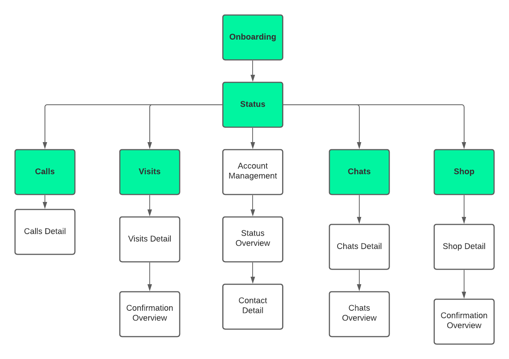Wireframes
Finally, I got to creating a wireframe that reflected the user flow and sitemap that I envisioned. At this point, I was able to receive preliminary design feedback to iterate on my design. Iterations are reflected in my prototype versions.
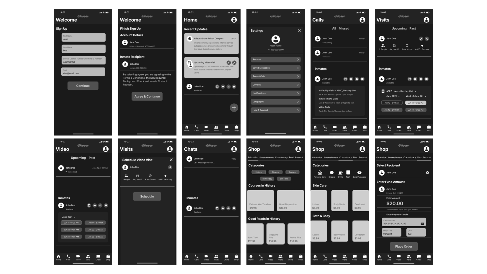Deliverables
- Branding
- Hi-Fidelity Prototype
- Usability Testing
Branding
When I started to think about branding, I was inspired by dark modes. In particular, the Material design system. I wanted my branding to reflect this style but with a strong and vibrant accent color. As for accessibility, I verified the color scheme to ensure that my selected branding colors are color blind safe and pass the WCAG AA and AAA standards.
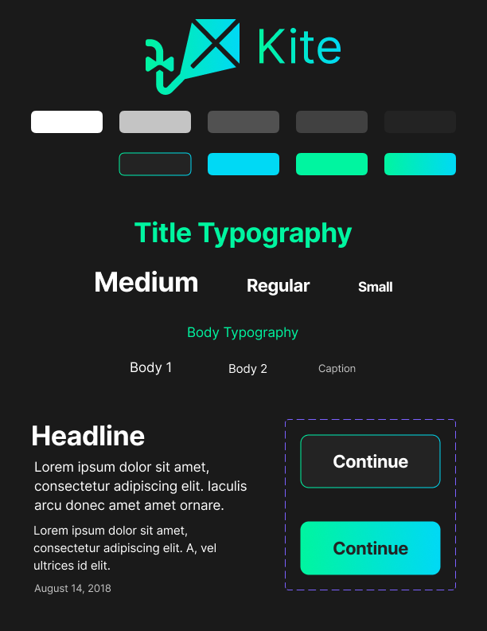Hi-Fidelity Prototype (V1)
My initial prototype was revised based on the feedback that I had received on my initial wireframe. Screens marked with red indicate revisions. The most notable feedback that I received was to condense the visits screen into the flow for in-person and video visits and provide more user feedback like the progress bar that you see incorporated into the onboarding screens.
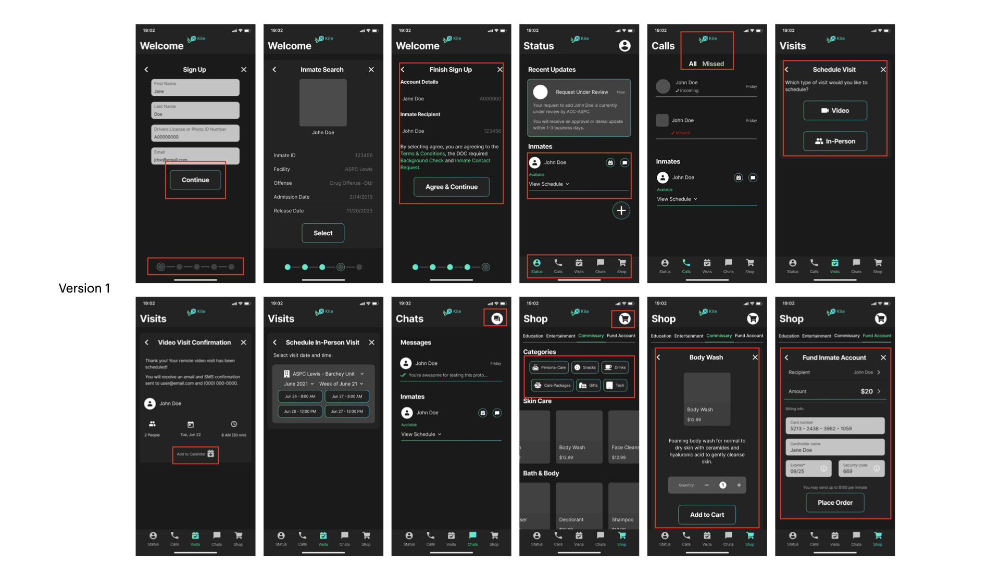Usability Testing
View Usability ReportI conducted unmoderated usability testing using Maze. I had my application tested with 17 screened users and I asked them to complete 9 missions relevant to my app features. I asked testers to complete the onboarding process and finalize sign up, then I asked them to schedule both facility and video visits, complete a SMS chat with an inmate, complete shopping tasks associated with buying commissary and funding an inmate account and finally, I asked them to test home features like viewing the user settings, and adding an inmate contact.
"This is 100x better than jPay (Securus Mobile)." - Tester
"I really like the fact that everything is incorporated in the app; finding inmates, phone calls, video visits, commissary, and resources." - Tester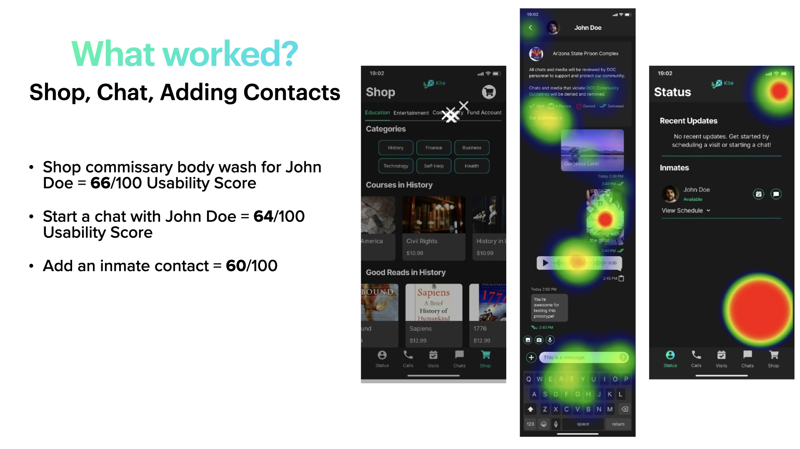
I fortunately had the highest usability scores for tasks associated with shopping. When I asked users to shop a commissary item, this task was the most successful and users seemed very comfortable with the store layout. I also had success with the messaging screen.
Finally, testers also successfully added contacts from the home screen. I believe this is due in part to the design feedback a user receives when they click this particular icon as it includes a, "Add Inmate" label. These particular screens performed very well and had between 84-95 usability scores along with higher usability scores for the expected task path.
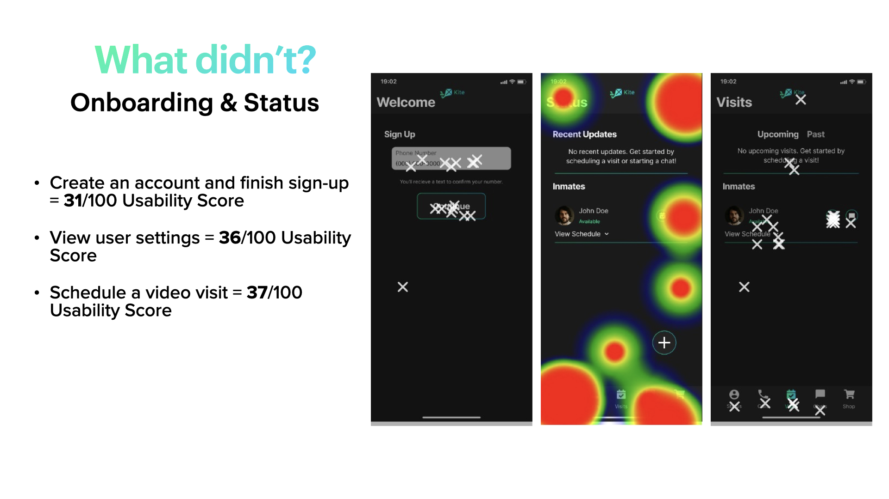My problematic tasks revolved around the onboarding process and the home layout. In particular the inmate contact component where users were expected to schedule visits or start a chat directly from the contact component.
Now, I noticed with the onboarding process task, there was an abnormal amount of users spending a significant amount of time on this screen and bouncing or exiting this particular screen. This is definitely something I’d like to continue to test to see if this really was a technical issue or a design flaw.
Then, in the task were I asked users to view user settings from the home screen, I could see from the test results that users had a hard time with this particular task and were exploring the rest of the screen to find the result which in my design, the user settings can be accessed by clicking the user icon on the top right.
Finally, when I asked users to schedule a video visit, there was clearly an opportunity to redesign the inmate contact component so this information is presented more clearly. Once users figured out to click the calendar icon, there were able to more successfully complete the visitation task as evidenced by the follow up task where I asked users to schedule a facility visit after scheduling video visit.
So as expected, there’s room for improvement and I could address these issues by redesigning the contact component to include user feedback on a hover or I could supplement the onboarding process by showing users how to use the app with a quick demo or walkthrough with pointers to messaging or scheduling visits.